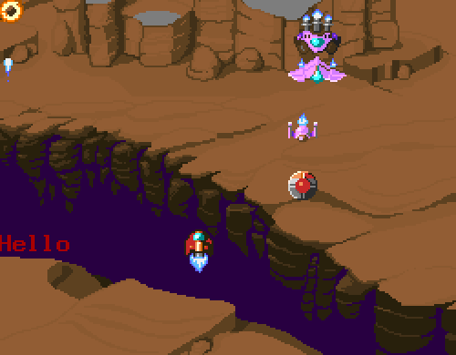

2019년에 만든 DOS용 게임
참 어릴적 MS-DOS 에서 게임 만들던 기억은 생각할 때마다 행복하다.
그 향수에 취해 2019년에 MS-DOS용 게임의 프로토타입을 만들어보았다.
그래픽 모드는 13h (320x200x256) 모드이고 그래픽 엔진을 자체제작했고 사운드 엔진은 공개된 엔진을 사용하여 ROL음악을 출력하였다. 스프라이트 컨버터를 자체제작하여 32bpp Truecolor 스프라이트를 지정된 팔레트에 맞는 256컬러 스프라이트로 변형해주는 툴을 만들었고 그 툴을 사용해서 스프라이트와 맵을 제작하였다. 컴파일은 Watcom C++ 10.6 버전을 사용했다.
DosBox에서 Watcom C++ 10.6으로 컴파일해서 실행까지 가능하다.
소스코드: https://github.com/gcjjyy/museum
